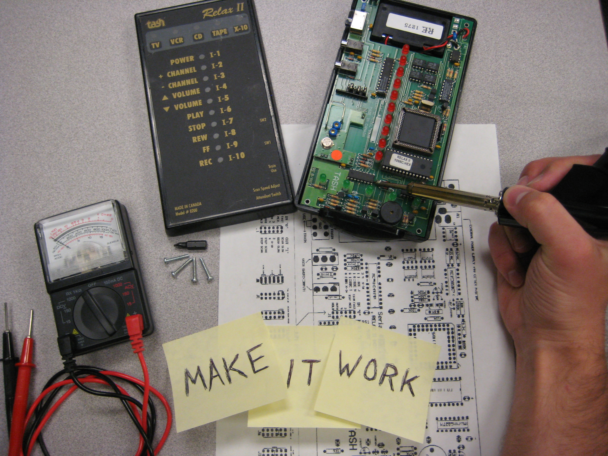

About
As a child, I found that the best people around were often those with disabilities. I spent most of my recesses
with my friends in the special ed classroom, and countless hours playing video games with Ty (who constantly
beat me with his one good hand). When I went off to college to become an engineer, they were always on my mind.
During my undergrad and master's programs at the University of Wyoming, I modified power wheelchairs to be controlled by eye movements
and obstacle-avoiding sensors. Afterwards, I spent a few years at an assistive technology clinic, where I
worked closely with people who have disabilities, along with a team of incredible physical/occupational
therapists and speech pathologists. We configured complex power wheelchairs, speech-generating devices,
environmental control systems, computer access methods, and custom video game controllers for clients with a vast
range of abilities.
Eventually, I decided that I could help more people, and those with more severe disabilities, through brain-computer
interfaces (BCIs). So I joined the University of Florida Computational NeuroEngineering Lab, and obtained a Ph.D. in
electrical and computer engineering. My work there in robot-assisted stroke rehabilitation introduced me to
the obstacles that impede progress in EEG-based BCIs, so I moved on to tackle those issues with magnetic fields
and nanoparticles as a postdoctoral fellow at the Johns Hopkins University School of Medicine.
Moving forward, my ultimate goal is to enable people with disabilities to fully engage in their lives. To this
end, I have three objectives:
- Advance the state of the art in assistive technology
- Produce and disseminate devices that can immediately improve the lives of people with disabilities
- Engender in generations of students a deep understanding of, and desire to serve, people with disabilities
I am currently Head of Therapy Developer Relations at Rune Labs.
Projects

Please feel free to utilize and expand upon these ideas, so long as your intent is not profit. I hope to more effectively help people by keeping things as free and open source as possible.
Research Projects:
Device Adaptations:
Resources

Free Software Tools:
- AutoHotKey
- Open source automation tool. A large community provides support and shares scripts for nearly anything.
- BCI2000
- General-purpose system for BCI research, available for free for non-profit research and educational purposes.
- CameraMouse
- Head, body part, or object tracking to control a mouse, using a webcam. Also see their downloads page
for a variety of handy, compatible software.
- ClickAid
- Similar to Dwell Clicker, but with added functionality, like Shift/Control/Alt click.
- Dwell Clicker
- Small program for dwell clicking and right click/double click/click and drag functions. The license seems to have changed hands,
and some functionality is restricted to a paid "pro" version, but there still seems to be a free version.
- EventGhost
- Automation tool that interfaces will with a variety of hardware, including IR transceivers and X-10 equipment.
- Jim Luther's Assistive Technology Collection
- A variety of handy tools for computer access and education.
- KidsMenu
- A replacement shell for windows that limits access to applications. Great for letting a child freely access preselected
programs and games. I use this on the PCs at AbleGames.
- Open Assistive
- Following from the Open Source Assistive Technology Software project. A catalog for open software and hardware.
- Point-N-Click
- ClickAid on steroids. Much more customizable.
- Snap Clutch
- An application that uses eye gaze data to generate key and mouse events for playing games and more.
Adaptations, Modifications, and DIY:
- Emergency Party Button
- A funny application, but a good overview of what can be done with X-10 and other home automation equipment.
One button doing many things is the essence of assistive technology.
- ModularHose
- Loc-Line segmented hose, great for mounting assistive technology, as well as building
Desk Squids and
Third Hands.
Appropriate kits for sale in the AT section.
- OpenEyes
- Open source, open hardware toolkit for low cost, real time eye tracking.
- Retro D9 Switch Interface (OneSwitch)
- A switch interface for 9-Pin D-sub connections, which can be used with Atari consoles, some power wheelchairs, and PCs through the use of a Stelladaptor.
- Switch Adapted Game Pad (OneSwitch)
- How to add switch jacks to a game controller. Useful for more than just this specific controller, as most are similar internally.
- Toodles (Instructables member)
- Multiple instruction sets for assembling and interfacing with Cthulhu microcontroller boards, for game controller emulation.
- Web-Controlled Christmas Decorations
- Possibly the most insane website ever made, but another great example of how home automation equipment can do nearly anything, especially when combined with a web server.
Also check out the Halloween version.
- WiiMote Managed Library
- Programming library for using Nintendo Wii controllers with a PC, in .NET.
- XBox 360 Switch Interfacing
- Specifically building an arcade-style joystick, but easily adapted for switch jacks. Instructions in the form of a forum thread.
Adapted Gaming:
- AbleGamers
- A non-profit foundation and community of gamers with disabilities. They work with developers (on the level of Mythic and Blizzard) to make their games more accessible.
- AcidMods
- Site fo controller modification in general, but they have done some very impressive, professional mods for gamers with disabilities.
- Ben Heck
- Hardware hacker extraordinaire, Ben Heckendorn designed the Access Controller and many one-handed game controllers,
and he does a wide variety of custom work. He put together some very helpful information for modifying Xbox One controllers
here.
- Broadened Horizons
- The Controller Project
- Caleb Kraft set up a website to modify controllers for people with disabilities. He customizes controllers as a service, and sells DIY mod kits and parts.
- Evil Controllers
- They sell one-handed controllers (left or right hand specific) with some really cool mods.
This graphic gives an idea of how they work.
- GlovePie
- A free, programmable input emulator, similar to JoyToKey. It appears that their website was hacked, so I have removed the link for now.
This project uses GlovePie to play Descent with various
controllers, and hosts a downloadable version.
- Joystix
- Another program for adapting controller inputs on a PC, specifically for gaming. Includes rotary thumb stick typing.
- JoyToKey
- Free software that allows game controllers to emulate keyboard and mouse inputs.
- LEPMIS PS3-SAP
- A switch access pod for Playstation 3. A Playstation 2 version is available as well, which could be used with the TTK adapters.
- Nanogames
- A set of very flexible, accessible games.
- OneSwitch
- The best resource around for one-switch and other accessible gaming, including a library of free games, a store, DIY guides, and a fantastic blog.
- R.J. Cooper
- A very well known name in assistive techology, he does some custom controller modifications, and sells several adapted models.
- Special Effect
- A charity that helps children with disabilities and their families to find games that work for them.
- Stealth Switch
- A USB switch interface. There are many others available, but because this one is not specifically assistive technology, it may be cheaper.
You can find it on Amazon.
- Stelladaptor
- An adapter that interfaces Atari 2600 controllers with PCs via USB. The beauty is that many sets of ability switches and wheelchair controllers use the same
9-Pin D-Sub interface, and can be connected to a PC with this adapter.
- TTK Console Adapters
- A variety of adapters for connecting Playstation 1/2 style controllers and devices to different consoles.
Contact
philips.gavin@gmail.com
Task prompting system for workers with cognitive disabilities

CIDE and our partners at CU Boulder and the Coleman Institute for Cognitive Disabilities have worked for more
than a decade to develop nonlinear context-aware prompting systems (NCAPS) to help people with cognitive
disabilities perform tasks necessary to maintain gainful employment. I have lead the latest iteration,
which guides workers through order picking tasks in retail or small warehouse environments.
This system incorporates multiple cart-mounted mobile devices (phones and tablets), a browser-based manager
control application, and a remote server to provide users with the minimal necessary assistance. QR codes
placed on the floor are scanned by devices for navigation, and bar codes on items are scanned for flow and
inventory control. Cues are overlaid on the device video feed in an augmented reality format, providing
guidance with minimal obstruction.
I coordinated a team of seven graduate students to perform the most recent round of user testing, gaining
valuable insights from participants with diverse cognitive abilities and impairments. These insights
guide system refinement and inform future directions for this ongoing project.
Associated publications:
- G. R. Philips, S. Van Vuuren, C. Bodine, “Helping or Hindering: Evaluation of Automated Task Prompting for Workers with Cognitive Disabilities,” (manuscript in preparation).
Socially assistive robots (SAR) for children with cerebral palsy

I supported and mentored a PhD student in her project to develop socially assistive robots (SAR) for children
with cerebral palsy. This project formed the core of her dissertation, and continues through the projects
of other PhD students after her graduation.
She iteratively developed and tested all aspects of multiple prototypes (user specs, mechanical design,
microcontroller systems, computer vision and reinforcement learning for facial affect classification,
human subjects research, etc.). I aided in the design and implementation of multiple human research studies,
electronic design, system and software development, and analysis of neural signals and other associated data.
Associated publications:
- C. Clark, G. R. Philips, B. Burne, V. Haggett, C. Bodine, “Study Design and Therapeutic Benefit with Ecological Validity: HCI for Children with Cerebral Palsy,” (submitted).
Wireless wheelchair charging system

We have collaborated with partners at Utah State University to develop a wireless charging system for power
wheelchairs, which includes an autonomous parking feature. The USU teams have been responsible for system
development and fabrication, while our product testing lab has guided design via user experience research.
Many power wheelchair (PWC) users have complex disabilities, and are unable to independently charge their PWCs.
This drastically reduces their independence and quality of life, and can place them in hazardous situations,
with particular risk to users whose PWC batteries power ventilators and other vital equipment. Our prototype
system allows a wheelchair to autonomously drive to and park itself on a pad, which then charges the PWC's
batteries via inductive wireless power transfer. The second generation prototype also updates the battery
technology to nearly double capacity and quadruple charging speed.
I have coordinated user testing for this project, including informal interviews, multiple rounds of focus groups
with potential users and their caregivers, online surveys, prototype demos with semi-structured interviews,
and expert review with clinicians. My analysis of the results has formed and iteratively refined functional
specs, producing a system that has received high ratings of user approval.
Associated publications:
- G. R. Philips, C. Clark, J. Wallace, C. Coopmans, Z. Pantic, C. Bodine, “User-Centered Design, Evaluation, and Refinement of a Wireless Power Wheelchair Charging System,” Disability and Rehabilitation: Assistive Technology, Sept. 2020.
- C. Teeneti, U. Pratik, G. R. Philips, A. Azad, M. Greig, R. Zane, C. Bodine, C. Coopmans, Z. Pantic, “System-Level Approach to Designing a Smart Wireless Charging System for Power Wheelchairs,” IEEE Transactions on Industry Applications, 57:5, Sept. 2021, pp. 5128-5144.
- A. Azad, R. Tavakoli, U Pratik, B. Varghese, C. Coopmans, Z. Pantic, "A Smart Autonomous WPT System for Electric Wheelchair Applications with Free-Positioning Charging Feature," IEEE Journal of Emerging and Selected Topics in Power Electronics, 2018.
Wearable fall detection and classification for aging adults with dementia
We are collaborating with the UCHealth Fall Prevention Clinic, Anthem Memory Care, and other industry partners on a
multifaceted project that includes development and user testing of wearable sensors, development of algorithms
for detection and classification of different types of falls, and user testing of wearable adhesives with
specific target populations.
People with dementia sometimes fall without the knowledge of their caregivers, and a wearable sensor could alert
caregivers and request help. However, these people often cannot describe exactly how they fell, so caregivers
cannot be certain of the location/severity of potential injuries. Classifying different types of falls from
accelerometer data can be difficult, particularly considering the sliding, subtle sorts of falls that are common.
In coordination with our product testing lab, we determine functional specifications for wearable sensors produced
by our industry partners. We perform human subjects research with the resulting devices, including tests with
varying types of falls, and evaluation of adhesives for use with the skin of aging users.
ViBE: Virtual Brain Electrode imaging

During my time at the Johns Hopkins University School of Medicine, I worked on a project supported by the NIH BRAIN Initiative,
in collaboration with Philips Research Hamburg and the University of Urbino, Italy. We intend to localize EEG signals by turning a controllable
voxel in the brain into an AM transmitter, modulating signals generated in that voxel of tissue with a certain carrier frequency, and then
"tuning into" that frequency at the EEG electrodes. This is made possible by the fact that red blood cells (RBCs) are disc-shaped, and have an electrically
insulating membrane. We stuff the cells full of superparamagnetic iron oxide (SPIO) nanoparticles, then use precise magnetic fields to align and
rotate them, modulating the conductivity of the blood, and thus the tissue.
Thus far, we have built our first prototype device, which includes a set of three-dimensional Helmholtz coils and custom electrode arrays for measuring
the conductivity of flowing blood. We have used this device to demonstrate the alignment of SPIO-loaded RBCs in a weak magnetic field (12 mT),
and to show that this alignment produces predictable changes in the conductivity of both stagnant and flowing blood. Ongoing experiments will
demonstrate that this modulates tissue conductivity, and will then record modulated signals in vivo.

I was awarded the "Golden Hairball" Award for most innovative research when I presented this project at the 20th Annual Johns Hopkins University
Division of Magnetic Resonance Research Retreat in October, 2017.
Associated publications:
- G. R. Philips, B. Gleich, G. A. Paredes-Juarez, A. Antonelli, M. Magnani, J. W. M. Bulte, “Magnetic Manipulation of Blood Conductivity with Superparamagnetic Iron Oxide-Loaded Erythrocytes,” ACS Applied Materials & Interfaces, 11, Mar. 2019, pp. 11194-11201.
- G. R. Philips, B. Gleich, G. A. Paredes-Juarez, A. Antonelli, M. Magnani, J. W. M. Bulte, “Virtual Brain Electrode (VIBE): Selective Magnetic Manipulation of Blood Conductivity,” proceedings of the 9th International Workshop on Magnetic Particle Imaging, New York, NY, Mar. 2019.
EEG-based biomarkers for stroke rehab

I performed my Ph.D. research in the Computational NeuroEngineering Lab at the University of Florida and the Brain Rehabilitation Research Center at the Malcolm Randall VA Medical Center.
There I focused on developing biomarkers that could be used to guide and evaluate motor rehabilitation after stroke. I applied nonparametric measures of association and graph theory to elicit and quantify
functional connectivity from electroencephalography (EEG). Several graph metrics were found to correlate with functional improvement, indicating their potential utility in prognosis and evaluation of therapeutic outcomes,
as well as BCI-enabled biofeedback.
The system that I built included an InMotion ARM robot with custom software, NeuroScan SynAmps EEG amplifiers,
and BCI2000 with some custom modules. Offline data processing was performed in Matlab. For further details, please see the publications below.
Associated publications:
- G. R. Philips, J. J. Daly, and J. C. Principe, “Topographical Measures of Functional Connectivity as Biomarkers for Post-Stroke Motor Recovery,” Journal of NeuroEngineering and Rehabilitation, 14:67, Jul. 2017.
- G. R. Philips, M. Kh. Hazrati, J. J. Daly, and J. C. Principe, “Addressing Low Frequency Movement Artifacts in EEG Signals Recorded During Center-Out Reaching Tasks,” IEEE Intl. Conf. on Engineering in Medicine and Biology, Aug. 2014, pp. 6497-6500.
Eye controlled wheelchair

This adventure began as my senior design project, for which Andrew Catellier and I received the Best Team Project award.
After graduation, I continued the project, and it became the focus of my master's thesis. Due to complications in the filtering and analysis of EOG (electrooculogram) signals,
the wheelchair served only as a proof of concept, and could not be tested by a subject with disabilities. I have decided to take a new approach,
which begins with designing a universal Computer-Wheelchair Interface.
The prompt was to design a way for a person who could not use his/her hands to control a wheelchair. This is currently accomplished through a variety of methods,
including arrays of proximity sensors placed in a headrest, chin/mouth joysticks, "sip and puff" units that sense the pressure of a user's breath in a tube,
single switch scanning methods that can utilize a variety of "ability switches," and many more. Unfortunately, the needs and abilities of each user vary greatly,
as does the effectiveness of each control method. We decided to add another option to the collective toolbox: eye movement.
Eye tracking is already used by people with disabilities for communication. A person who cannot speak may use an AAC (Augmentative and Alternative Communication) device,
the most complicated of which are rugged tablet PCs with specialized software installed. Several such devices are now available with infrared VOG (videooculogram)
based eye tracking, including offerings from Tobii Dynavox,
EyeTech, and many more.
Our approach instead utilizes EOG (electrooculogram), which does not require any hardware to placed in the user's field of view.
While EOG can sense both vertical and horizontal movement of the eyes, we opted to use only horizontal movement for steering, as it seemed impractical for a user to
look up and down in order to move forward and backward. Instead, the chair cycles through modes, including "conversation," "pivot," "forward," and "backward."
These modes are controlled by a pair of 3.5 mm (1/8") mono jacks, which are compatible with most "ability switches."
For testing, a "sip and puff" unit was used.
The system is controlled by a Motorola HCS12 "Minidragon" microcontroller, and powered by four 7.2 volt battery packs (in order isolate the user from the wheelchair's power system).
Unfortunately, the DC drift inherent in EOG signals makes them very difficult to use for control of such a system.
The EagleEyes system utilizes a DC blocking filter to circumvent this problem, but while continually drifting toward
center is acceptable for a mouse cursor, it is impractical for wheelchair control. In addition, the process of reverse engineering and hacking the electronics of the existing
wheelchair is time consuming and introduces liability issues.
I initially planned to address these problems and take advantage of existing eye tracking technology through a new approach, described in my Computer-Wheelchair Interface project.
However, Team Gleason and Microsoft have since made significant progress on a similar concept, the Independence Drive wheelchair.
Associated publications:
- G. R. Philips, A. A. Catellier, S. F. Barrett, and C. H. G. Wright, "Electrooculogram Wheelchair Control," ISA Biomedical Sciences Instrumentation, 43, Apr. 2007, pp. 164-169.
- G. R. Philips, C. H. G. Wright, and S. F. Barrett, "Expanding Smart Wheelchair Technology for Users with Severe Disabilities," ISA Biomedical Sciences Instrumentation, 44, Apr. 2008, pp. 47-52.
Head controlled, wheelchair mounted paintball turret

A teenager with quadriplegia wants to play paintball with his brothers, and he wants to be able to aim and
shoot by himself. One of our graduate students began working with this student to find a solution, and
I joined to provide guidance and electrical engineering/programming expertise.
We have collaborated with the user, his family, his occupational therapist, and several assistive technology
providers to assess his needs and abilities, and formulate functional and technical specs for the solution.
His unique wheelchair and seating system have required us to build custom mounting equipment, and his
specific abilities have led to a custom control scheme.
A microcontroller-based device is mounted on his mask, and wirelessly transmits measurements of his head
movements to a second microcontroller that controls the turret's servo motor. A "micro light" switch has
been hacked into the gun, allowing him to fire with a miniscule movement of a fingertip. This project is
ongoing, as more user testing is required to tune the control parameters to his particular physiology,
and the system/wheelchair must be protected from the harsh environment of a paintball field.

Wireless computer-wheelchair interface

In designing the eye-controlled wheelchair, it was necessary to reverse engineer the available power wheelchair and hack into its proprietary circuitry.
This process took quite a while, and has been repeated by many other researchers around the world. This seems like a waste of time that could be
better spent developing improved input methods, control algorithms, environmental sensors, and so on. No one likes reinventing the wheel.
In order to alleviate this issue, I have done some work to develop a universal computer-wheelchair interface, which would handle that part of the
puzzle and allow researchers to focus their time on more important endeavors. In addition, this will allow users to take advantage of currently
existing computer access methods, such as head trackers, specialized mice, keyboards, joysticks, touch screens, single or double switch scanning, etc.
Combining such a tool with preexisting eye trackers (like those from Tobii and Dynavox) would result in an improved alternative to my previous
eye-controlled wheelchair. Finally, the use of a common PC as a controller (as opposed to one or more microcontrollers) would make software
development more accessible, opening doors for work in self-localization, mapping, obstacle avoidance, semi-autonomous navigation, docking,
input smoothing/correction, and other avenues of smart wheelchair research.
The current version of my interface uses an Arduino microcontroller and Bluetooth to allow a computer, tablet, or smart phone to wirelessly control
most of the power wheelchairs that accept "alternative drive controls." The four major power wheelchair brands in the U.S.
(Invacare, Pride/Quantum, Quickie, and Permobil) use different, proprietary connections to interface with specialized drive controls.
Some developers (like Adaptive Switch Labs) produce products that interface with these connections, but these are generally brand-specific.
I have, however, discovered that nearly any such power wheelchair accepts a 9-pin D-sub connection, though occasionally an additional adapter is required.
(Invacare Mark 6i electronics, for example, may require the ASL 151MK6i shown here (PDF).) This connection is utilized by a variety of
drive controls,
such as wafer boards and external switch scanning systems. This plug is actually the same connection as an old
Atari joystick, which just expects a
circuit connection between a particular pin and the ground pin to move in a particular direction. If you connect a wire between the "forward" pin and
the ground pin, the chair will move forward.
The pins (at least for non-proportional control) for all four major U.S. power wheelchair brands are:
- Forward
- Reverse
- Left
- Right
- (no connection)
- "Fire" (a.k.a. reset, emergency stop. I haven't experimented with this much yet.)
- Power (+5v on the chairs that I have tested. You can draw from most chairs to power an Arduino or other microcontroller, but probably not with an Invacare chair.)
- Ground (a.k.a. common)
- (no connection)
You can easily figure out the power and control voltages (3, 5, or 12 volts) of your particular chair by connecting a multimeter between the ground and each of the other pins.
However, the control voltage shouldn't matter, because you're just connecting one pin to the other. I used the exact same device with all four wheelchair brands, without
modification, and it worked fine.
In order to mimic a "switch closure" and connect two pins of the interface with a microcontroller, you can use a simple transistor (I used the
2N3904 BJT).
Connect the collector pin of the transistor to the desired control (forward, reverse, left, or right) pin of the 9-pin D-sub connector, and the emitter pin to the ground (pin 8).
Then connect the base pin of the transistor to a digital output pin of the microcontroller, through a 4.7 kiloohm resistor (as shown
here). When that particular digital
output pin of the microcontroller turns on, current will flow from the control pin to the ground pin, through the transistor. Repeat this circuit for each of the four directions,
and once for the "fire"/mode pin if desired.
It is important to note that my current design only gives non-proportional control thus far, as it just mimics switch closures between different pins of that 9-pin plug.
(Proportional control allows the user to vary the speed of movement/turning, as with a standard joystick. Non-proportional control is simply on/off in each direction,
like four buttons.) I have been told that some systems (like the newer Quantum enhanced displays) can also take proportional control through that same plug, and I have an idea
of how that might work, but I haven't tested it. I would guess that, in place of the transistor that "mimics a switch," you could use a digital potentiometer to vary the
resistance between two particular pins. Then the pin for a particular direction would receive a lower voltage than the full "switch closure" (which is 3, 5, or 12 volts,
depending on the brand of chair), and hopefully drive proportionally. This is just my guess, though. If you know more on this topic, I'd love to hear about it.
Update: A very helpful occupational therapist from France (Julien OUDIN) pointed out to me that the
R-Net Omni technical manual (PDF) is publicly available, and includes
specifications for both digital and analog/proportional interfaces (starting on page 129). Last I checked, both Quickie and Permobil chairs used R-Net electronics, and I
suspect the other brands have very similar specifications. I haven't built an analog/proportional interface myself yet, but it shouldn't be too difficult with this information.
I have also hosted the manual here (PDF), in case the previous link changes at some point.
Regardless of how you end up physically connecting a microcontroller (like an Arduino) to the chair, sending signals to that microcontroller from a computer or smart phone via
Bluetooth is pretty cheap and easy (especially if you use an Arduino). I used a BlueSMiRF Silver connected directly to
the serial pins of an Arduino Uno.
The code running on the microcontroller just reads serial data; I never even had to think about how Bluetooth actually works. The code itself is fairly simple, as it just
reads from a serial port and turns on/off a few pins (which control the "switch mimicking" transistors). I used this code,
with the free "Processing" environment, but I would
assume that you could do the same or something similar with any such tool.
The layout and code are available in one package in
this Fritzing file. (Learn more about Fritzing here.)
In order to power the microcontroller, you can usually draw power (5 volts) directly from the chair on pin 7. If it is an Invacare chair, or some other brand that doesn't provide power on pin 7, you can simply connect a small battery
(a 9 volt would be perfect). If, for example, you pack an Arduino, BlueSMiRF, and a small circuit board with the transistors into a box with a 9-pin plug, you should be able
to mount it on the chair somewhere out of the way.
Any computer, tablet, or smart phone with Bluetooth should be able to pair with the BlueSMiRF through the standard Bluetooth pairing process.
Then you simply send commands to the port that is associated with that Bluetooth connection. In my code, the commands are simply the letters a, b, c, d, and e.
You can change these to anything you like. My code also functions in "latched mode," meaning that a "forward" command will make the chair move forward until it receives a stop command.
Any letter other than a, b, c, d, or e will stop all movement immediately. You could easily change this behavior by adding a delay after each digitalwrite() command, and then setting
the same pin back to LOW. I used Putty to send Bluetooth serial commands from a laptop computer, but there are many ways to send Bluetooth commands. I'm sure you could do something
far more creative and useful, like building a graphical user interface, or passing user inputs (mouse, keyboard, eye tracker, etc.) through a tool like AutoHotkey
or EventGhost.
With this setup, I can sit across the room and drive a wheelchair wirelessly with my laptop/tablet.
In order to implement a new eye-controlled wheelchair from this point, the following would be necessary:
- Tablet or laptop PC with commercially available eye tracker mounted in front of the user
- Webcam aiming forward, at what would be the user's view from the wheelchair
- Real-time stream from webcam displayed on the PC's screen, possibly with a HUD/overlay for control of forward/back, speed, and mode
- The aforementioned computer-wheelchair interface to pass cursor movements (as controlled by the eye tracker) to the wheelchair
One major drawback to this method thus far has been the fact that a tablet PC or AAC device with an eye tracker generally cost $8,000-15,000 (USD). Fortunately, inexpensive eye trackers
have appeared, like those marketed for gaming by Tobii. (Unfortunately, The Eye Tribe was sold to Facebook for Oculus integration.)
This could also be circumvented by using a home-built or open source eye tracker (like one of Jason Babcock's designs).
Many other options are listed by COGAIN
I plan to continue working on this project, but I would be very happy to see how others tackle this problem, especially as this may be the perfect scope for an engineering senior design project.
Meanwhile, Team Gleason and Microsoft have made significant progress on a similar concept, the Independence Drive wheelchair.
Custom Xbox 360 controller for user with muscular dystrophy

A young man who loves playing XBox 360 games online with his friends has muscular dystrophy. Initially, the standard XBox 360 controller
has been an incredible tool for him, as it fits his hands, allows him to actuate the controls with minimal strength and range of motion,
and can also be used to control a personal computer. Unfortunately, as MD is a progressive condition, the controller became
increasingly difficult for him to use.
In order to address this problem, I worked with a fantastic occupational therapist (Beacky Breaux)
to determine whether a controller could be modified to fit his abilities.
I used an electric kitchen knife to carve a block of wheelchair seating foam into a replica of a controller, complete with mock thumb sticks.
When positioned in his hands, this allowed us to evaluate his range of motion and determine the ideal placement of the thumb sticks and
buttons. This template was then used to create the design for a new, accessible controller. In conjunction with this first design,
it was necessary to:
- Soften the pull of both triggers
- Move the right thumb stick up and to the right, symmetrical to the left thumb stick
- Rearrange the X, Y, A, and B buttons (as shown in the first mock-up image)
- Replace the D-Pad with an analog thumb stick
- Connect four 3.5mm mono jacks to actuate the "click" of the left and right thumb sticks, and the "down" and "right" functions of the D-Pad
(3.5mm mono jacks are very common in the assistive technology field, and are compatible with most "ability switches." This person uses several
"Ultimate Switches"
placed around his head, and two string switches attached to his toes to actuate the functions associated with these 3.5mm jacks.)

This plan was sent to Ben Heckendorn (a.k.a. Ben Heck), who hacked a standard XBox 360 controller into shape, making the requested modifications.
Unfortunately, the modified controller wasn't a perfect fit. The user could not reach the X or A buttons consistently,
and the replacement of the D-Pad with a thumb stick didn't improve function as expected. However, the other modifications worked beautifully.
This is a complex problem, and some trial and error is expected, but it's still frustrating when things don't work out as you hope.
So plans were drawn up for version 2. The following changes to the previously modified controller were required:
- Replace the new thumb stick with the original D-Pad
- Move the X button back to the right side of the controller, and move the A button to the right side of the B button (as shown in the second image)
- Connect four more 3.5mm jacks to actuate the X and Y buttons, and the D-Pad "up" and "left" (in case he cannot use them, or he loses the ability as his condition progresses)
Because the D-Pad contacts of the controller were destroyed during the addition of the thumb stick, it was necessary to start over with a fresh controller,
rather than continuing to modify the same one. Ben Heckendorn continued the work, and sent along version 2 for testing.

In summary, the modifications to the fresh XBox 360 controller were:
- Soften the pull of both triggers
- Move the right thumb stick up and to the right, symmetrical to the left thumb stick
- Rearrange the X, Y, A, and B buttons (as shown in the second mock-up image)
- Connect eight 3.5mm jacks to actuate the X and Y buttons, both thumb stick "clicks," and all four directions of the D-Pad
With these modifications, version 2 was a success! Though the addition of switch jacks rendered the D-Pad nonfunctional,
he can use separate switches for all four directions when necessary. As shown above, he currently uses:
- The modified controller, carefully positioned on the bed, between his legs
- One button-type switch (Jelly Bean, Buddy Button, etc.) attached to the pillow behind his head with Velcro
- Two "Ultimate Switches," one to the left of his head, and one below his chin
- Two String Switches, which he pulls with his toes (mounted on boxes that I built from tri-wall cardboard, wrapped in wheelchair seating foam)
Each switch can be plugged into any jack, and used for any of the available functions, so they can be tailored to fit each game.
If he later discovers that he needs more switches, they can easily be added. A "sip and puff" switch is a likely option.
Special note: Caleb Kraft wrote a Make article about modifying XBox controllers,
in which he directs people interested in custom controllers to Ben's handy tutorial video
and The Controller Project, where Caleb modifies controllers by request!
Another update: Microsoft has released the XBox Adaptive Controller, which is the best commercially-produced
adaptive controller I've seen. It it also incredibly inexpensive at $100, and pairs well with the (also impressively inexpensive)
Logitech G Adaptive Gaming Kit of switches and accessories.

Switch adapted Guitar Hero

It is fairly common for a person with severe disabilities to interact with his or her environment by using a
single switch, selected from a wide variety of available "ability switches." Wheelchairs, computers,
speech generating devices, environmental control units, and more can be controlled with a single switch.
This also extends to the world of video games, and OneSwitch provides a superb overview of single switch
gaming.
Often, one switch games must be designed from scratch, to accommodate the reduced number of inputs.
Independent game development for the PC is common, but is much more rare in the world of consoles
(i.e., XBox, Playstation, etc.). Fortunately, many of the available guitar or band mimicking games
include a "beginner mode," which requires the user only to activate the "strum bar" of the controller.
This means that these games are perfectly suited to one switch play. All that's left is to connect the
ubiquitous 3.5mm mono jack to a guitar controller.
Barrie of OneSwitch has already hacked a Rock Band guitar
and drums for this purpose. However, Play-N-Trade
donated a Guitar Hero World Tour set to ATP for AbleGames, which required a slightly different process of switch
adaptation.
I switch adapted the "strum bar" for one switch play, which was extremely successful at AbleGames 2009 and 2010.
Later, I switch adapted each of the colored "fret" buttons, in hopes that a team of 4-6 people with
disabilities could play the game as a team, with each controlling a single switch.
R. J. Cooper sells similarly adapted guitars for $49 (USD).
Solderless battery interrupter

A battery interrupter is a tool that adds a switch jack to (aka "switch adapts") an electrical device.
This is usually done for the purpose of allowing a person with disabilities to use that device, by using an "ability switch," which can be anything from a
plastic button to a muscle twitch sensor. These switches are almost always wired to a 3.5mm (1/8") mono plug, and can be connected to anything with a
matching jack. They are used with power wheelchairs, computers, speech devices, toys, remote controls, and so on.
A battery interrupter allows us to add a switch jack to a device that:
- Is powered by AA, AAA, C, or D batteries.
- Simply turns on or off with a single switch (like the infamous cymbal-crashing monkey).
A battery interrupter is simply a 3.5mm jack, with each of the two wires connected to small metal plates, which are separated by an insulator (like tape or
thick paper). These plates are placed between the batteries of a device, effectively redirecting the electrical circuit through the 3.5mm jack, so that
it can be opened and closed with a switch.
Enabling Devices sells battery interrupters here
(and the manual is here (PDF)). Ablenet has them for $15 (USD)
here and here.
You can also make your own battery
interrupters by soldering a pair of wires (or a speaker wire) to a 3.5mm jack and to two small metal plates separated by double-sided tape or some other
thin insulator. However, if you are not comfortable soldering, this guide will teach you how to make a battery interrupter with only a few dollars worth
of parts (or the scraps left from making a CD Switch).
I have posted an Instructable, so that anyone can easily make their own
no-solder battery interrupters. I suggest making one of these along with a CD Switch,
as they work well together, and the battery interrupter can be made of the scraps left from building the switch.
A PDF version of the Instructable is also available.
Bonus: I used two of these to build the Nerf Combat Wheelchair.
CD switch

In the realm of assistive technology, a switch (aka "ability switch") can be anything from a plastic button to a muscle twitch sensor. A
wide variety of switches are available, and can be selected to fit the
needs of each user. These switches are almost always wired to a 3.5mm (1/8") mono plug, and can be connected to anything with a matching jack. They are used
with power wheelchairs, computers, speech devices, toys, remote controls, and so on.
The problem is that switches are expensive. A basic Jellybean Switch or Buddy Button costs around $50-60 (USD), for just a plastic button. While these are worth
their weight in gold, the price is still a bit steep, especially in the low-budget/non-profit world of assistive technology.
Sometimes, it's handy to make your own.
Fortunately, a switch is a very simple thing. It's just a circuit closing, just two wires touching. We will use less than $10 (USD) worth of parts to let a person
press a surface (in this case a CD), and touch two wires together. R. J. Cooper also sells
CD Switch Kits for about $10 (USD) each, in packs of five or ten.
Save the left over scraps from this project, as you can use them to build a No-Solder Battery Interrupter, which you can use to let this
switch control toys and other devices.
I have posted an Instructable, so that anyone can easily make their own CD Switches. I suggest making one
of these along with a Solderless Battery Interrupter,
as they work well together, and the battery interrupter can be made of the scraps left from building the switch.
A PDF version of the Instructable is also available.
This project was also posted on Hack A Day.
Ablegames events

A quick note first: AbleGames is not associated with The AbleGamers Foundation.
AbleGames (later SwitchItUp) was a program of Assistive Technology Partners that ran for three years.
Many people were involved. I just coordinated and prepared the games and technology, and tried to keep them working during the event.
Photo albums from each event can be found here.
At AbleGames 2010, we had:
- 6 Nintendo Wii stations
- Each projected onto a wall for the "big screen" effect
- 2 with our "seating system on a Fit Board" contraptions
- 2 with switch adapted Guitar Hero (one with drums and microphone)
- 2 with WiiMotes strapped to hats, arms, etc. for racing and sports games
- 6 computer stations
- Each with a switch interface, switches, and a variety of adapted mice, joysticks, and head trackers
- One with a cardboard carrel to block light/glare and remove distractions, for children with vision impairments
- Each with the following games (most provided by OneSwitch):
- 2 switch adapted Nerf machine gun stations
- With velcro tipped darts, targets, and vests for moving targets to wear
- Mounted on "universal mounts" (a.k.a. Bogen arms, or Manfrotto Magic Arms)
- 2 switch adapted pinball tables (Provided by Dan and Holly of the Rocky Mountain Pinball Showdown)
- 1 standard height, 1 with legs cut down to accommodate children and wheelchairs
- Adapted so that one switch jack controls both paddles
- 1 "Splatball" station
- (A homemade slingshot that could be fired by pressing a large board, which shot paintballs at targets.
Several people recommended paintball for children with vision impairments, due to the sound, smell, and tactile feedback.)
- A large variety of switch toys, iPads with games and other fun apps, a switch adapted "color spinner" painting toy, etc.
Physical, occupational, and speech therapists volunteered as coaches for each participant, helping to tailor games to
their particular needs on the fly. Other volunteers included the ATP staff and their families, other local therapists,
a local boy scout troop, and many more. Two retired basketball players from the Denver Nuggets came to play Hoop Stars
with the children, as well as sign autographs, pose for pictures, and act as Nerf gun targets. At the end of the day,
each participant received a trophy, certificate, and CD with all of the computer games. All of the computers (donations
that I refurbished) were given away, so that the participants could continue playing at home.
AbleGames really was an incredible day for everyone involved.
Special thanks go to Barrie at OneSwitch for his constant support and advice, as well as most of the games themselves.
Please check out his excellent blog post about AbleGames 2010. The photos he chose are fantastic!
Please feel free to contact me with any questions.
Nerf combat wheelchair
You might ask yourself, "Why would anyone mount dual Nerf machine guns on a wheelchair, and hack it to fire them from the drive controls?"
I might ask you why you hate fun.
The guns can be fired by any drive control connected to the chair. Joystick, head array, chin/mouth stick, sip and puff, single switch, etc. Pick your poison.
I used an Invacare wheelchair with Mark VI electronics, but this can be done with any power wheelchair that can use an "ECU 1/2" or "ECU 3/4" box. (These connect to the chair's
electronics and have two 9-pin D-sub ports for output. They are commonly used for controlling speech generating devices or computers.)
Some of the parts may be quite expensive, but it's possible to find cheaper alternatives if you get creative.
The recipe:
- Switch adapt two Nerf Vulcan machine guns using battery interrupters and two zip ties.
(Edit: It seems the Nerf Vulcan has become quite rare/expensive, so see the bottom of the page for alternatives.)
- Acquire two Manfrotto Magic Arms or kits
(which are the same thing as "Universal Mounts,"
but cheaper because they aren't marketed as assistive technology...), and two extra clamps (four clamps total).
- Attach a clamp to each end of each Magic Arm.
- For each gun, clamp one end of the arm onto the tripod's mount, and the other onto the frame of the wheelchair. Adjust to position and aim however you like.
- Mount an "ECU 1/2" or "ECU 3/4" box on the wheelchair and connect it to the chair's electronics.
(This is the sort of thing that a supplier or clinic would do for you, as it requires a brand-specific wheelchair programming device.)
- Plug a 9-pin D-sub to 3.5mm splitter cable (like one of the "802-" cables show here (PDF) or a home-made version) into one of the ports of the ECU box.
- Choose two of the 3.5mm plugs (left and right, or whichever directions work best for the user while driving the chair),
and plug them into the battery interrupters of the Nerf guns. (Alternatively, use a Y-adapter and connect one plug to both guns.)
That's it! Now, tap your mode switch (or whatever you have to do with your brand of wheelchair) to switch into ECU mode, and move your joystick (or whatever drive control you use). You are now driving an AH-64 Apache attack wheelchair.
Paint some shark teeth on that beast and show 'em who's boss!
A note on Nerf guns: Apparently, the Nerf Vulcan has become quite rare and/or expensive these days, but there are other guns that will do the job.
As you can see in this fantastic video, others have set up similar rigs with the
N-Strike Stampede ECS and the Vortex Nitron.
While I have not experimented with either of these myself, I expect that the Stampede can be adapted very similarly to the Vulcan.
The Vortex Nitron might (or might not) be slightly more complicated to adapt, as it looks like it may have a secondary switch to turn on the motor,
but you may be able to just turn it on and leave it. After a quick test, the
Rapidstrike CS-18 and the Rayven CS-18 don't seem to be viable options,
as they have a secondary trigger that must be held to power the motor, which complicates things.
It seems that new models continue to be released, while old models skyrocket in price, so it may take some research to find the right gun. If the price is more than $100 (USD), it's probably an overpriced old model.
As of October 2017, the N-Strike Elite Rhino-Fire Blaster looks like the most likely candidate at ~$70 (USD), but I haven't tested it myself.
If you want to try this out, I will gladly provide more details.
{kind=link}
{kind=link}